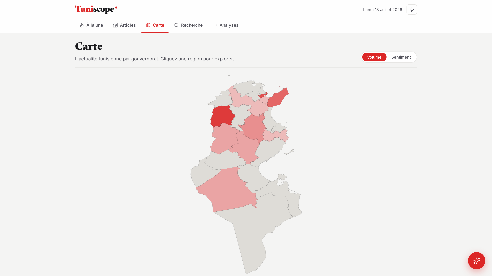

Tuniscope ●
TEK-UP University · Data Science & AI · 2025–2026
End-of-semester project · MLOps · Soutenance edition
News Insight
An MLOps platform that collects, understands and serves Tunisian news.
Prepared by
Ahmed Klabi · Mariem Smadhi · Hichem Sboui
1 · The problem & the product
2 · Architecture & models
3 · Operations & monitoring
News Insight · Soutenance1 / 15
Tuniscope ●
Part 1 · The problem
Part 1 · The problem
Tunisian news is scattered across sites — unsearchable, unmeasured.
| Source | Site | Language | Format |
|---|
| La Presse | lapresse.tn | French | RSS feed |
| Business News | businessnews.com.tn | French | RSS feed |
| Kapitalis | kapitalis.com | French | RSS + HTML pages |
| Mosaïque FM | mosaiquefm.net | French | RSS feed |
Four newsrooms, four websites, four archives. No shared index exists across them:
you cannot search them together, compare their tone, or see which regions of
Tunisia the coverage actually reaches.
No search
by meaning, across sources
No mood
tone is never measured
No map
regional coverage invisible
Why it matters —
To follow the news today a reader visits each site by hand — and still cannot
search by meaning, see the overall mood, or view coverage on a
map. Analysts have no measurable view of the Tunisian news cycle at all.
News Insight · Soutenance2 / 15
Tuniscope ●
Part 1 · The answer
Part 1 · The answer
One pipeline: collect the news, understand it, serve it.
Collectscrape 4 sources · RSS + HTML
dedup on URL · daily at 06:00
new rows →
Understandmeaning · mood · theme · region
per article, written back as columns
serve →
Exploreread · search · map · dashboard · ask
one web app
Why MLOps —
The loop runs unattended on a schedule, survives re-runs, and every run is
logged and measured. Not a notebook — an operated pipeline.
News Insight · Soutenance3 / 15
Tuniscope ●
Part 1 · The product
Part 1 · The product
Every source lands in one feed, tagged by topic and mood.

Fig. 1 — the unified feed ("À la une"): the live sources interleaved;
each card shows its source, theme and sentiment. The interface is French, for a Tunisian audience.
Why this view —
This page is the pipeline's output made visible: the source and every tag
on every card (theme, sentiment) were produced by the models on slides 9–10,
not entered by hand.
Sources can be filtered per newsroom; the date line and tags update as the
pipeline runs.
News Insight · Soutenance4 / 15
Tuniscope ●
Part 1 · The product
Part 1 · The product
Sentiment, themes and geography — measured, not guessed.

Fig. 2 — Analyses: 120 articles · sentiment 43% negative / 25% neutral /
33% positive · fixed themes and discovered topics side by side. Every number is a SQL aggregate, recomputed live.

Fig. 3 — Carte: all 24 governorates, shaded by article volume or average
sentiment; 14 governorates carry coverage in the current corpus. Region extracted per article (slide 9).
43%
negative — news skews dark
33%
positive · 25% neutral
6
topics in latest clustering
14 / 24
governorates with coverage
News Insight · Soutenance5 / 15
Tuniscope ●
Part 1 · The product
Part 1 · The product
Search works by meaning; the assistant answers only from real articles.

Fig. 4 — Recherche: "football" returns transfer and match news ranked by
relevance — including articles that never contain the word. Semantic ranking, slide 12.

Fig. 5 — the assistant answers a question and lists the exact articles it
used as numbered sources. It refuses to answer beyond them.
"football"e5 embed →
384-dim vectorcosine <=> →
nearest articles
|
questionretrieve 5 →
LLM reads only thosegrounded →
answer + sources
mechanics · slide 12
News Insight · Soutenance6 / 15
Tuniscope ●
Part 2 · Architecture
Part 2 · Architecture
From live sites to one database to one app — every layer replaceable.
RSS scrapers ×4La Presse · Business News · Kapitalis · Mosaïque FM
Kapitalis HTMLdeep-crawl fallback
Prefect · scrape → transform → load ↓
PostgreSQL + pgvector
one articles table · text + vector(384) · UNIQUE(url) — pgvector · vector similarity inside SQL
each model reads rows, writes one column back ↓
Embeddingse5-small
meaning vector
SentimentXLM-RoBERTa
pos / neu / neg
ThemeGroq LLM
1 of 10 fixed
Regiongazetteer + LLM
governorate
TopicsBERTopic
discovered groups
Groq · external LLM API
MLflow · logs every clustering run
FastAPI serves the enriched rows ↓
FastAPI → React + Vite
5 routers · articles, search, genai, img, pipeline
Why one table —
Enrichment is UPDATE-in-place columns, so any result is
inspectable with plain SQL.
Why pgvector —
Similarity search lives inside PostgreSQL
(cosine <=>): joins with filters for free, one
fewer service to operate than a dedicated vector DB.
News Insight · Soutenance7 / 15
Tuniscope ●
Part 2 · Collection
Part 2 · Collection
Collection survives messy sources: RSS, an HTML fallback, idempotent writes.
4 RSS feeds+ Kapitalis HTML deep-crawl
when the feed runs dry
parse →
DedupON CONFLICT (url)
DO NOTHING
new only →
articlesone table
UNIQUE(url)
Field note — from this morning's run log:
ERROR | etl.extract — businessnews failed: SSLError(CERTIFICATE_VERIFY_FAILED:
unable to get local issuer certificate) — https://www.businessnews.com.tn/rss.xml
The site serves an incomplete certificate chain. The run continues on the
three healthy feeds instead of failing — a source outage costs coverage, never the pipeline.
| Source | Articles in corpus | Status today |
|---|
| Mosaïque FM | 80 | delivering |
| Kapitalis | 20 | delivering (RSS + HTML) |
| La Presse | 20 | delivering |
| Business News | 0 | down — broken TLS chain, skipped |
Proven live —
We re-ran the full pipeline while writing this deck: the corpus went
60 → 120 articles with zero duplicates — every re-inserted URL hit
UNIQUE(url) and was skipped.
The daily 06:00 cron can therefore never double-count an article, no matter
how often it fires.
News Insight · Soutenance8 / 15
Tuniscope ●
Part 2 · Models
Part 2 · Models
Four models enrich every article — each chosen for a reason.
| Model | Task | Output column | Why this one |
|---|
| e5-small multilingual, 118 MB |
embedding | vector(384) |
multilingual French/Arabic, strong retrieval, cheap on CPU |
| XLM-RoBERTa cardiffnlp sentiment |
sentiment | positive · neutral · negative |
trained on 100+ languages incl. Arabic — no translation step |
| Groq LLM external API |
theme | 1 of 10 fixed themes |
fixed label space keeps charts comparable run after run |
| Gazetteer + LLM place-name lookup |
region | governorate |
place names beat generic NER on short news briefs |
A fifth model, BERTopic, runs periodically across the whole corpus — next slide.
Audit in one line — run against the live database this morning:
news_db=# SELECT sentiment, COUNT(*) FROM articles GROUP BY 1 ORDER BY 2 DESC;
negative | 51 positive | 39 neutral | 30
Why columns —
Each model writes exactly one column back to
articles. Any prediction can be audited with a
one-line SQL query, and any model can be swapped without touching the others.
News Insight · Soutenance9 / 15
Tuniscope ●
Part 2 · Topic discovery
Part 2 · Topic discovery
BERTopic finds the topics; MLflow keeps the receipts.
BERTopicclusters the e5 vectors of similar articles — topics are discovered, not predefined
keywords per cluster ↓
LLM names each cluster"Tunisie et Crise du Golfe" · "Météo Tunisienne" — sanitized before storing
write topic_id · topic_label ↓
articles tablefilters, dashboard, map pick the labels up instantly
This run —
6 topics across the embedded corpus, 16.7% outliers
(min_cluster_size = 3).

Fig. 6 — the MLflow run logged by this clustering pass: run
gaudy-goose-52, experiment news-clustering, status FINISHED —
params (embed model, min cluster size) and metrics (n_topics, outlier_pct). Captured this morning.
News Insight · Soutenance10 / 15
Tuniscope ●
Part 3 · Operations
Part 3 · Operations & monitoring
Prefect runs it every morning — and every run leaves a metrics row.

Fig. 7 — the Prefect run behind this deck's numbers:
news-pipeline · amorphous-shellfish, COMPLETED in 7m 26s.
Captured this morning.
cron 06:00 Africa/Tunis
HTTP trigger
retries 2× / 60s
idempotent upsert
| pipeline_metrics · row 1 · 2026-07-14 08:34 |
|---|
| articles_new | 60 |
| sentiment pos / neu / neg | 23 / 13 / 24 |
| embed_model | intfloat/multilingual-e5-small |
One row per run —
A drop in articles_new or a sentiment spike is visible
in a single SQL query the next morning. This row was written by the run we
triggered while building this deck.
News Insight · Soutenance11 / 15
Tuniscope ●
Part 3 · The assistant
Part 3 · The assistant
The assistant reads five retrieved articles — not its memory.
Questionplain language,
French or Arabic
e5 embed →
pgvector searchcosine <=> · nearest-neighbour
5 closest articles
as context →
Groq LLMreads only those 5
answer + numbered sources
The actual retrieval query — api/routes/genai.py:
SELECT id, title, url, content FROM articles
WHERE embedding IS NOT NULL
ORDER BY embedding <=> %s::vector -- cosine distance, pgvector index
LIMIT 5;
If the embedding model is missing, the same endpoint degrades to French full-text
ranking — the assistant keeps working, only less semantic.
Grounding, in practice — from this morning's captured chat (Fig. 5):
« Aucune information n'est fournie sur les performances ou les résultats récents
des équipes tunisiennes dans les compétitions en cours. »
Asked beyond its five articles, it declines — it cannot hallucinate an answer.
Why retrieval, not fine-tuning —
The corpus changes every morning; retrieval follows it for free.
Because the model only sees the retrieved articles, every claim carries a
numbered citation the jury can open — and when the articles say nothing,
the assistant says so instead of inventing.
News Insight · Soutenance12 / 15
Tuniscope ●
Part 3 · Reproducibility
Part 3 · Reproducibility
The whole platform reproduces with one command.
$ docker-compose up
✔ news_postgres :5433 PostgreSQL 16 + pgvector
✔ news_prefect :4200 orchestration UI
✔ news_mlflow :5001 experiment tracking
✔ news_api :8001 FastAPI + pipeline
✔ news_frontend :5180 React dashboard
| Guarantee | Mechanism |
|---|
| Same schema everywhere | db/schema.sql auto-applied on first boot |
| Same behaviour | 52 pytest tests, run in CI on every push |
| No secrets in the repo | one .env file, ignored by git |
| Open source throughout | Python · PostgreSQL · Prefect · MLflow · FastAPI · React |
Why it matters —
A fresh machine reaches this exact running stack — database, pipeline,
tracking, UI — from a clone and one command. That, plus the scheduled runs
and the metrics trail, is what makes this MLOps rather than a notebook.
News Insight · Soutenance13 / 15
Tuniscope ●
Part 4 · Contributions
Part 4 · Contributions
What this project demonstrates — and where it stops.
| Claim | Evidence |
|---|
| A complete platform, running today |
live app, slides 4–6 — captured this morning, not mocked |
| Search by meaning over French news |
e5 vectors + pgvector cosine <=>, slide 12 |
| An assistant that cites its sources |
RAG over the corpus, numbered citations, Fig. 5 |
| Operated, measured MLOps |
Prefect run + MLflow run + pipeline_metrics row, slides 10–11 |
Honest limits —
a 120-article, 4-day corpus; French-first (Arabic dialect untested); sentiment not yet
evaluated against a labelled Tunisian set; one source down (TLS); half the corpus awaits
its embedding backfill.
next · more sources
next · Arabic dialect sentiment
next · named-entity extraction
next · embedding backfill job
Sized to the evidence —
Every claim on this slide points at something the jury can open live:
the app, the Prefect UI, the MLflow run, or a one-line SQL query.
News Insight · Soutenance14 / 15
Tuniscope ●
Back page
Thank you.
Questions & discussion — the stack is running, ask for any live view.
News Insight · Soutenance15 / 15